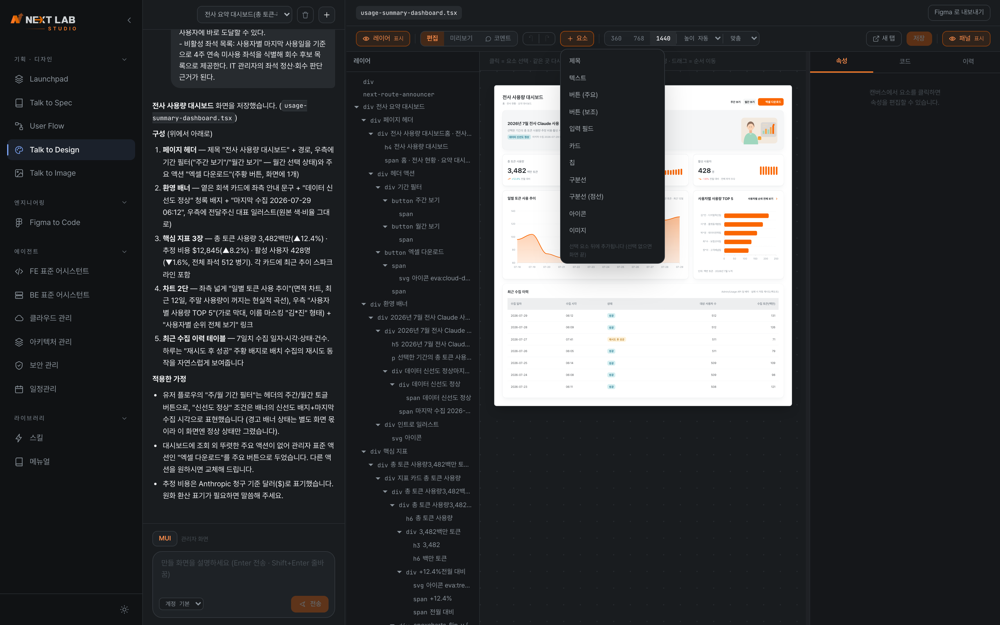

NextLab Studio
사용자 메뉴얼
아이디어에서 기획 · 디자인 · 코드까지 잇는 데스크톱 AI 에이전트 워크스페이스의 사용 설명서입니다. 2장 Launchpad 가 이 도구의 주 기능이며, 이 문서의 절반을 차지합니다. 화면에 넣을 그래픽이 필요하면 3장, Figma 링크가 이미 있다면 4장부터 읽어도 됩니다.
이런 글자 는 화면에 그대로 보이는 값·경로·명령입니다.
[필수] 표시가 붙은 단계는 건너뛰면 기능이 동작하지 않습니다.
CHAPTER 01
설치와 첫 실행
Studio 는 VSCode 확장이 아니라 독립 실행되는 데스크톱 앱입니다. 한화 DS 디자인 자산이 앱 안에 내장되어 있어, Figma 를 쓸 수 없는 외부 SI·오프라인 환경에서도 화면을 만들 수 있습니다.
1.1설치
사내 배포 채널에서 사용하는 OS 의 설치 파일을 내려받습니다.
| OS | 설치 파일 | 요건 |
|---|---|---|
| Windows | NextLab.Studio.Setup.0.3.1.exe | Windows 10 이상 · x64내려받아 실행하면 설치 마법사가 진행됩니다 |
| macOS (Apple Silicon) | NextLab.Studio-0.3.1-arm64.dmg | macOS 13 이상 · M1 이후dmg 를 열고 앱을 응용 프로그램 으로 끌어 넣습니다 |
| macOS (Intel) | NextLab.Studio-0.3.1.dmg | macOS 13 이상 · x64Intel Mac 은 이 파일을 받습니다 — arm64 판은 실행되지 않습니다 |
- 설치 파일을 실행해 안내대로 설치를 마칩니다
- Studio 를 실행합니다 — 최초 실행은 내장 자산을 펼치느라 몇 초 더 걸립니다
- 좌측 사이드바에 네 구역이 보이면 설치 완료입니다 (1.3)
claude 명령이 필요하며, 미설치 시
npm install -g @anthropic-ai/claude-code 로 설치합니다.
1.2AI 계정 연동 필수
연동을 마치기 전에는 Launchpad · Figma to Code 가 실행되지 않습니다. 최초 1회만 하면 됩니다.
- 좌측 사이드바 하단의 계정 을 엽니다
- 연동 상태를 확인합니다 —
✓는 연동됨,!는 미연동입니다 - 미연동 항목을 클릭하면 로그인 절차가 시작됩니다
- 로그인을 마치고 돌아오면 표시가
✓로 바뀝니다
1.3화면 구성
좌측 사이드바는 네 구역입니다. 무엇을 만들지(기획·디자인 / 엔지니어링)와 무엇으로 만들지(에이전트 / 라이브러리)가 나뉘어 있습니다.

| 구역 | 하는 일 | 참조 |
|---|---|---|
| 기획 · 디자인 | Launchpad — 아이디어에서 PRD · 화면 흐름 · 실물 화면 · 프로토타입까지. 낱개 그래픽은 Talk to Image 로 그립니다 | 2장 · 3장 |
| 엔지니어링 | Figma to Code — 디자인 링크에서 NXL 표준 React 코드 생성 | 4장 |
| 에이전트 | 대화 상대를 고릅니다. 고르면 연결된 스킬·메뉴얼이 컨텍스트로 자동 주입됩니다 | — |
| 라이브러리 | 스킬과 사내 정본 메뉴얼이 보관되는 곳입니다 | — |
CHAPTER 02 · 주 기능
Launchpad — 0 to 1
아이디어만 있고 기획서도 디자인도 없는 상태에서 시작하는 기능입니다. 네 기능의 묶음이 아니라 하나로 연결된 파이프라인이라는 점이 핵심입니다 — 앞 단계의 산출물이 뒷 단계의 입력이 되므로, 순서대로 진행할 때 가장 잘 동작합니다.
2.0전체 흐름 한눈에
2.1Talk to Spec — 기획 도출
기획 양식을 몰라도 됩니다. 아이디어를 입력하면 LLM 이 되묻는 질문으로 빠진 요건을 채우고, PRD → 유저플로우 → 와이어프레임 방향을 순서대로 도출합니다.

- 사이드바 기획 · 디자인 → Talk to Spec 을 엽니다
- 만들려는 것을 평소 말투로 적습니다 — "현장 작업자가 설비 점검 결과를 모바일로 올리는 화면" 정도면 충분합니다
- 객관식 질문지에 답합니다 — 보기를 고르거나(복수 선택 가능), 보기에 없으면 직접 입력합니다. 모르는 질문은 건너뛰어도 진행됩니다 — AI 가 아이디어를 근거로 가정을 채우고 표시해 둡니다
- 답할수록 좌측 기획 아이디어 서술이 실시간으로 구체화됩니다 — 답을 고치면 그 자리에서 다시 반영됩니다
- PRD 생성하기 를 누르면 답변을 근거로 PRD 가 만들어집니다. 이어서 기능명세(우선순위·인수조건)를 검토·수정합니다
- 확정되면 다음 단계 버튼으로 User Flow 에 넘깁니다

잘 나오게 하는 입력
- 누가 쓰는지를 먼저 적습니다 — 사용자가 정해지면 나머지 질문이 구체적으로 바뀝니다
- 도메인 용어를 그대로 씁니다. 일반적인 말로 바꿔 적으면 그만큼 일반적인 기획이 나옵니다
- 이미 정해진 제약(사용 기기 · 오프라인 여부 · 기존 시스템 연계)은 처음에 적어 둡니다
2.2User Flow — 화면 흐름도
도출된 기획을 바탕으로 화면 간 흐름을 자동 배치합니다. 정상 흐름과 오류·예외 흐름이 톤으로 구분되어, 빠진 경로를 그 자리에서 찾아낼 수 있습니다.

- Talk to Spec 에서 넘어오면 흐름도가 자동으로 그려진 상태로 열립니다
- 노드를 끌어 배치를 정리합니다 — 위치는 결과물에 영향을 주지 않고 읽기 편하라고 있는 것입니다
- 노드를 클릭해 화면 이름 · 역할 · 진입 조건을 수정합니다
- 빠진 경로는 대화로 추가하거나("결제 실패했을 때 흐름을 넣어줘" → 노드와 연결선이 함께 생깁니다), 아래 편집 도구로 직접 그립니다
- 확정되면 다음 단계로 보내기 로 Talk to Design 에 넘깁니다
보드 직접 편집 — AI 없이도 전부 그릴 수 있습니다
- 노드 추가 — 상단 툴바에서 화면 · 분기 · 시작/끝 · 메모 네 종류를 직접 추가합니다. 분기(다이아몬드)는 "만 19~45세 범위?" 같은 조건 갈림길에 씁니다
- 연결선 그리기 — 노드 가장자리의 ○ 를 드래그해 다른 노드로 잇습니다. 선을 클릭하면 라벨(예 · 아니오 · 재입력)과 종류(정상/오류)를 바꿀 수 있습니다
- 디자인 연결 — 노드를 우클릭 → 디자인 연결로 Talk to Design 에서 만든 화면을 붙입니다. 연결되면 노드에 실제 화면 썸네일이 실리고, 와이어프레임 단계의 "연결됨" 상태로 집계됩니다
- 메모 — 더블클릭으로 편집합니다. "개인정보 최소 고지 포함" 같은 정책 메모를 흐름 옆에 붙여 둡니다
- Full Flow / Happy Flow — 상단 탭으로 전체 흐름과 정상 경로만 보기를 전환합니다
- AI 로 그리기 · 다시 그리기 — 흐름 전체를 AI 에게 다시 배치시키거나, 지시문으로 새로 그리게 합니다
이 단계에서 꼭 확인할 것
- 모든 화면에 들어오는 경로가 하나 이상 있는지 — 고립된 노드는 대개 기획 누락입니다
- 오류 · 빈 상태 · 권한 없음 경로가 있는지
- 되돌아가는 경로(취소 · 뒤로)가 끊기지 않는지
2.3Talk to Design — 실물 화면
내장 캔버스에서 사내 디자인 킷으로 실물 React 화면이 렌더됩니다. 그림 목업이 아니라 동작하는 화면이므로, 그대로 흐름을 눌러 보며 검증할 수 있습니다.

- User Flow 에서 넘어오면 화면 목록이 만들어지고, 첫 화면이 캔버스에 렌더됩니다
- UI 킷을 고릅니다 — MUI 관리자 · DS 2.0 운영/모바일 · DS 3.0 영업 중 서비스 성격에 맞는 것을 선택하면 해당 킷의 토큰·타이포·컴포넌트 어휘로 그려집니다
- 디자이너가 아니어도 요소를 직접 끌어 위치를 바꾸고 간격 · 정렬 · 색을 다듬습니다
- 구조를 바꾸는 큰 수정은 대화로 지시합니다 — "목록을 카드에서 표로 바꿔줘"
- 화면 목록에서 다음 화면으로 옮겨 같은 방식으로 다듬습니다 — 저장하면 이후 AI 수정이 그 위에서 이어집니다
캔버스 직접 편집 — 대화 없이 그 자리에서
- 선택 · 이동 — 요소를 클릭하면 라벨·크기 배지가 뜨고, 드래그로 순서를 재배치합니다. Alt + 호버로 Figma 처럼 여백·간격을 실측할 수 있습니다
- 텍스트 수정 — 더블클릭으로 문구를 그 자리에서 고칩니다
- 속성 인스펙터 — 우측 패널에서 위치·정렬·색·라운드·보더·그림자를 직접 편집하고, 스타일 복사/붙여넣기·복제·삭제·언두가 됩니다
- 코멘트 모드 — 화면 위에 핀을 꽂아 피드백을 남깁니다. 편집자와 검토자가 같은 화면에서 대화합니다

요소 · 이미지 추가
- + 요소 — 툴바 팔레트에서 제목 · 텍스트 · 버튼(주요/보조) · 입력 필드 · 카드 · 칩 · 구분선 · 아이콘 · 이미지를 골라 넣습니다. 선택한 요소 뒤에, 지금 쓰는 킷의 표준 스타일로 삽입됩니다
- 아이콘 — 픽커에서 킷 아이콘 카탈로그(DS 2.0 전 계열 · 관리자 DS 415종)를 검색해 넣거나 바꿉니다. 화면 생성 프롬프트와 같은 어휘라 화면 간 아이콘 톤이 유지됩니다
- 내 이미지 — 픽커의 내 이미지 탭에서 Talk to Image 로 만든 일러스트·그래픽(3장)을 바로 화면에 삽입합니다. 별도 파일 관리 없이 두 기능이 이어집니다
- Figma 로 내보내기 — 완성된 화면을 Figma 캔버스로 옮겨 디자이너와 이어서 작업할 수도 있습니다 (Figma Desktop + NextLab Figma Bridge 플러그인 필요)
2.4Prototype — 개발 전에 미리 써보기
파이프라인의 마지막 단계입니다. 지금까지의 기획 · 흐름 · 화면을 근거로 테스트 케이스를 자동 설계하고, 케이스별 더미 데이터가 실린 화면을 실제 서비스를 쓰듯 직접 클릭하며 진행합니다.

- 와이어프레임 단계에서 프로토타입으로 넘어가기 를 누르면 테스트 케이스가 자동 설계됩니다 — 정상 · 예외 · 엣지 세 종류로 나뉩니다
- 케이스를 고르면 첫 화면이 열립니다. 케이스마다 조건을 재현하는 더미 데이터가 붙어 있습니다
- 안내되는 스텝을 따라 화면 속 요소를 직접 클릭해 진행합니다 — 대상이 아닌 곳을 누르면 그 자리에서 알려줍니다
- 우측 서랍에서 기대 결과 · 전체 스텝 · 더미 데이터를 확인하고, 어긋난 부분은 코멘트로 남깁니다
- 케이스와 무관하게 화면 자유 탐색으로 아무 화면이나 열어볼 수도 있습니다
이 단계에서 꼭 확인할 것
- 상단 지표에서 화면 연결 · 화면 커버 · P0 인수조건 누락 이 모두 채워졌는지 — 빠진 곳이 숫자로 드러납니다
- 예외 케이스(입력 범위 초과 · 네트워크 오류)가 실제로 안내 화면으로 이어지는지
- 이해관계자 검토가 필요하면 새 탭 · 내보내기로 프로토타입만 따로 공유할 수 있습니다
CHAPTER 03
Talk to Image
화면에 넣을 일러스트 · 아이콘 · 로딩 씬 같은 낱개 SVG 그래픽을 대화로 생성하는 캔버스입니다. Launchpad 파이프라인과 독립적으로 동작하며, 스톡 이미지를 찾아 헤매거나 디자이너 일정을 기다리지 않아도 됩니다.

- 사이드바 기획 · 디자인 → Talk to Image 를 엽니다
- 그래픽 스타일을 고릅니다 — 라인 · 솔리드 · 듀오톤 · 일러스트 중 쓰임새에 맞는 것을 선택합니다
- 만들 그래픽을 설명합니다 — "연금·노후 준비 화면에 쓸 일러스트, 베이지 라운드 카드 배경" 처럼 쓰일 곳과 분위기를 함께 적으면 정확해집니다
- 캔버스에서 크기 · 색을 직접 편집합니다. 요소를 선택해 대화에 첨부하면 그 부분만 고쳐 그립니다
- SVG 다운로드로 화면·문서에 바로 쓰거나, GIF / WEBM 모션 내보내기로 움직이는 버전을 받습니다
CHAPTER 04
Figma to Code
이미 Figma 디자인이 있다면 Launchpad 를 건너뛰고 여기서 시작합니다. Builder 와 동일한 생성 워크플로를 Studio 에 내장해, 개발 환경이 없는 PC 에서도 디자인 링크에서 한화 DS 표준 React 코드를 만들고 검증까지 합니다.

- 사이드바 엔지니어링 → Figma to Code 를 열고, 프로젝트 폴더를 먼저 엽니다 — 생성 산출물과 미리보기 샌드박스가 이 폴더에 만들어집니다
- 우측 패널에서 UI 킷(MUI 관리자 · DS 2.0 · DS 3.0)과 컴포넌트명을 정합니다
- Figma 에서 변환할 프레임을 선택하고 우클릭 → Copy link to selection 으로 링크를 복사해 붙여 넣습니다 — 주소에
?node-id=…가 포함되어 있어야 합니다 - 생성 시작을 누릅니다. 필요하면 빌드 검증 + 실패 시 자동수정, 정밀도 경고 시 Figma 재조회 보정 옵션을 켭니다
- 생성물을 Storybook 미리보기 샌드박스에서 사내 테마(light/dark)로 렌더해 원본과 대조하고, 어긋난 부분은 리터치(자연어 보정)로 다듬습니다
// 링크에 node-id 가 있어야 특정 프레임을 정확히 읽습니다 https://www.figma.com/design/<fileKey>/파일이름?node-id=684-16571&m=dev
CHAPTER 05
문제 해결
| 증상 | 원인과 해결 |
|---|---|
| Mac 에서 앱이 손상됐다고 나옴 | 칩에 맞지 않는 설치 파일입니다. Apple Silicon 은 arm64.dmg, Intel 은 NextLab.Studio-0.3.1.dmg 를 받으세요. (1.1) |
| 기능을 눌러도 실행되지 않음 | AI 계정이 연동되지 않은 상태입니다. 계정 에서 ! 표시를 클릭해 로그인하세요. (1.2) |
연동 표시가 계속 ! |
CLI 로그인이 만료되었거나 CLI 가 설치되지 않은 경우입니다. claude 명령이 터미널에서 동작하는지 확인한 뒤 다시 로그인하세요. (1.1 · 1.2) |
| 기획이 두루뭉술하게 나옴 | 입력이 일반적일수록 결과도 일반적입니다. 사용자·도메인 용어·제약을 구체적으로 적고, 되묻는 질문에 답해 요건을 채우세요. (2.1) |
| 흐름도에 예외 경로가 없음 | 기획 단계에서 예외가 정의되지 않았습니다. 흐름도에서 대화로 "실패했을 때 흐름을 넣어줘" 처럼 추가하면 노드와 연결선이 함께 생성됩니다. (2.2) |
| 캔버스 화면이 의도와 다름 | 구조 변경은 끌어 옮기기가 아니라 대화로 지시해야 합니다. 간격·정렬·색만 직접 다듬으세요. (2.3) |
| 프로토타입에서 클릭해도 진행되지 않음 | 스텝의 대상 요소가 아닌 곳을 누른 경우입니다. 우측 서랍의 전체 스텝에서 지금 눌러야 할 요소를 확인하세요. (2.4) |
| 그래픽 톤이 화면과 따로 놈 (Talk to Image) | 스타일을 화면 킷과 다른 쪽으로 고른 경우입니다. 스타일을 바꾸거나, 쓰일 화면·배경색을 설명에 함께 적으세요. (3장) |
| Figma to Code 생성 버튼이 비활성 | 프로젝트 폴더를 아직 열지 않은 상태입니다. 좌측 탐색기에서 폴더 선택으로 프로젝트를 먼저 여세요. (4장) |
| 엉뚱한 화면이 생성됨 (Figma to Code) | 링크에 node-id 가 없습니다. 프레임을 선택하고 우클릭 → Copy link to selection 으로 다시 복사하세요. (4장) |
| 실행이 도중에 멈춤 | 도구 권한이 표준 이면 확인 단계에서 대기할 수 있습니다. 전체 허용 으로 바꾸면 중단 없이 완주합니다. |
휴대폰으로 QR 을 찍거나 https://nxl-ai-tools.reala.pro 으로 접속하면
최신 설치 파일과 소개 자료를 받을 수 있습니다.